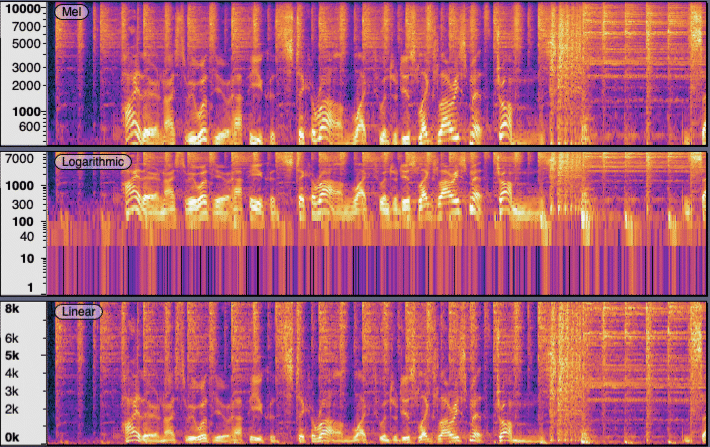
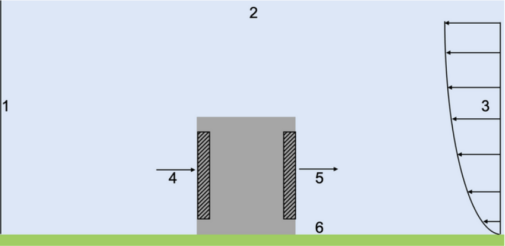
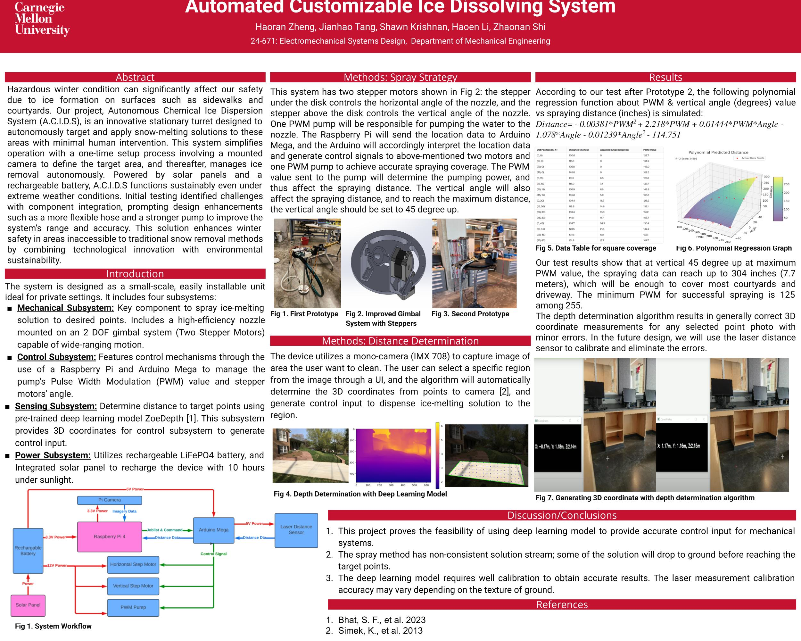
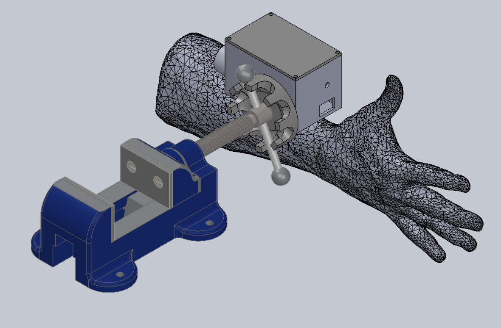
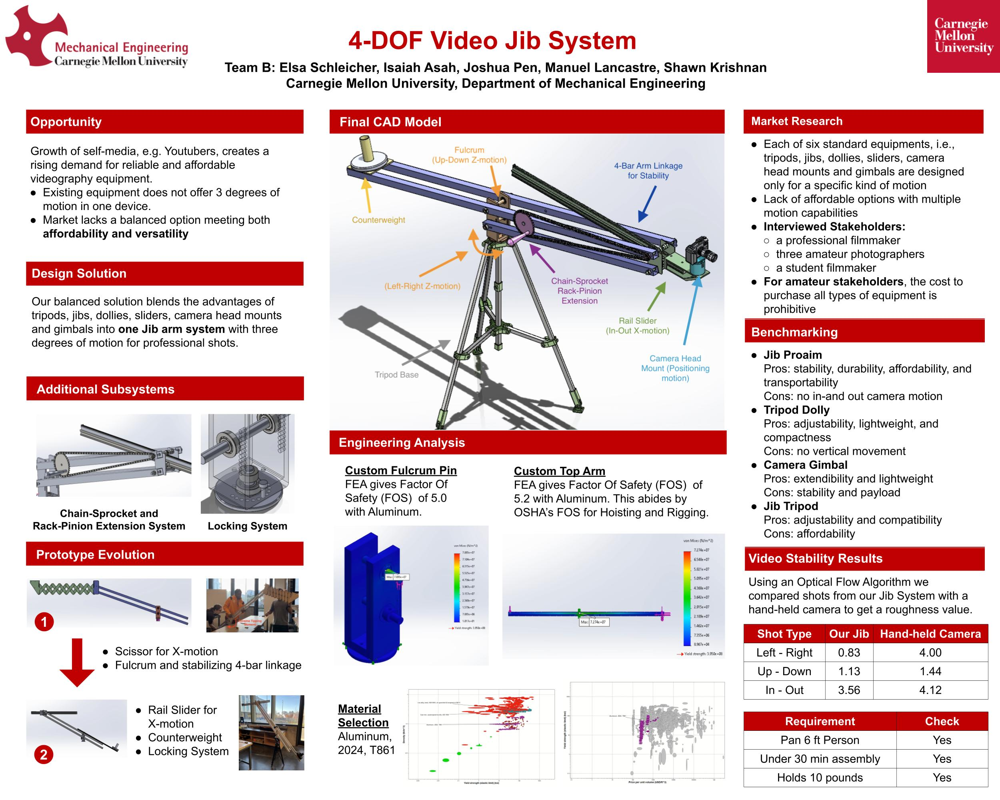

This project presents a continuous-accent TTS model built on Grad-TTS, where accent embeddings are learned and applied via a diffusion framework.
We investigate CO₂ re-entrainment around building geometries via 2D CFD simulations, identifying optimal aspect ratios that minimize recirculation.
This work develops an autonomous turret that dispenses de-icing fluid to melt ice in hard-to-reach areas.
This design integrates a two-stage gearbox into a wearable brace to reduce wrist torque by 70% when operating a vise.
We built a modular 4-DOF jib, using FEA to optimize stiffness and weight under realistic camera loads.
